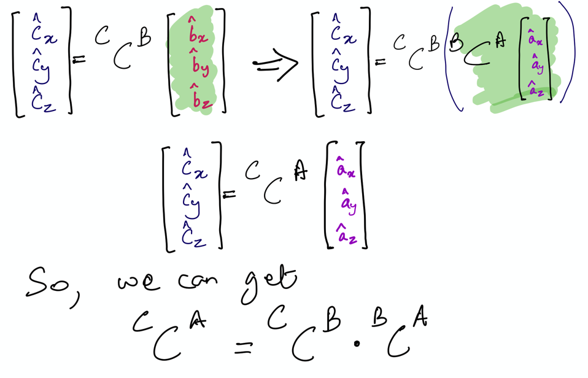

Table of Contents
Knowledge Tester 1 Solution#
In L4PA6, you learned how to compute the direction cosine matrices between different reference frames to generate the angular velocity and acceleration of one frame with respect to another. In this activity, you are to perform the orientation kinematics for the wall-door-cat flap system shown below.

Specifically, you are to compute the following in the A-frame and also the B-frame:
\(^N\omega^C\) and store it in a variable named
N_w_C_a_frameandN_w_C_b_frame; and\(^N\alpha^C\) and store it in a variable named
N_alpha_C_a_frameandN_alpha_C_b_frame.
Handwritten setup#
Create scalars using symbols and dynamicsymbols#
from sympy.physics.mechanics import dynamicsymbols, ReferenceFrame, init_vprinting
from sympy import sin, cos, Matrix
init_vprinting()
theta, phi = dynamicsymbols('theta phi')
thetadot, phidot = dynamicsymbols('theta phi',1) # gives the first time derivative of the angles
Creating Reference Frames and orienting using DCM#
Write angular velocity vectors \(^A\omega^B\) and \(^B\omega^C\) using the variables A_omega_B and B_omega_C, as below:
A = ReferenceFrame('A')
B = ReferenceFrame('B')
C = ReferenceFrame('C')
B_dcm_A = Matrix([
[cos(theta), 0, sin(theta)],
[0, 1, 0],
[-sin(theta), 0, cos(theta)]
])
C_dcm_B = Matrix([
[1, 0, 0],
[0, cos(phi), -sin(phi)],
[0, sin(phi), cos(phi)]
])
C_dcm_A = C_dcm_B*B_dcm_A
C.orient(A, 'DCM', C_dcm_A.transpose())
B.orient(A, 'Axis', (-theta, A.y))
C_w_A = C.ang_vel_in(A)
N_w_C_a_frame = C_w_A.express(A).simplify()
N_w_C_b_frame = C_w_A.express(B).simplify()
# Angular velocity questions
C_w_A = C.ang_vel_in(A)
N_w_C_a_frame = C_w_A.express(A).simplify()
N_w_C_b_frame = C_w_A.express(B).simplify()
N_w_C_b_frame
A_alpha_C = C.ang_acc_in(A)
N_alpha_C_a_frame = A_alpha_C.express(A).simplify()
N_alpha_C_b_frame = A_alpha_C.express(B).simplify()
N_alpha_C_b_frame